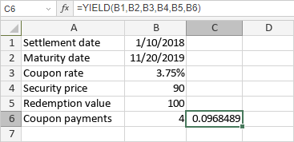

YIELD funkcija
Funkcija YIELD je jedna od finansijskih funkcija. Koristi se za izračunavanje prinosa hartije od vrednosti koja isplaćuje periodične kamate.
Sintaksa
YIELD(settlement, maturity, rate, pr, redemption, frequency, [basis])
YIELD funkcija ima sledeće argumente:
| Argument | Opis |
|---|---|
| settlement | Datum kada je hartija od vrednosti kupljena. |
| maturity | Datum kada hartija od vrednosti ističe. |
| rate | Godišnja kamatna stopa hartije od vrednosti. |
| pr | Cena kupovine hartije od vrednosti, po nominalnoj vrednosti od 100 $. |
| redemption | Vrednost otkupa hartije od vrednosti, po nominalnoj vrednosti od 100 $. |
| frequency | Broj isplata kamata godišnje. Moguće vrednosti: 1 za godišnje, 2 za polugodišnje, 4 za kvartalne isplate. |
| basis | Osnova za brojanje dana, numerička vrednost od 0 do 4. Opcioni argument. Moguće vrednosti su navedene u tabeli ispod. |
Argument basis može biti jedna od sledećih vrednosti:
| Numerička vrednost | Metoda brojanja dana |
|---|---|
| 0 | US (NASD) 30/360 |
| 1 | Stvarno/stvarno |
| 2 | Stvarno/360 |
| 3 | Stvarno/365 |
| 4 | Evropski 30/360 |
Napomene
Datumi moraju biti uneti korišćenjem DATE funkcije.
Kako primeniti YIELD funkciju.
Primeri
Na slici ispod prikazan je rezultat koji vraća YIELD funkcija.
